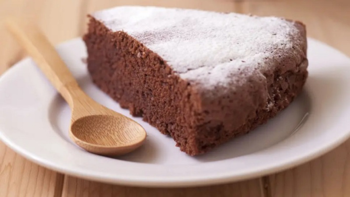

Gâteau au chocolat

Ingrédients
Pour 8 personnes
- 200 g de chocolat noir à 52% de cacao
- 125 g de beurre doux (ou demi-sel pour les gourmands)
- 100 g de farine de blé T65
- 1 sachet de levure chimique (10 g)
- 4 gros oeufs bio
- 150 g de sucre en poudre
- 1 pincée de sel
Préparation
- Etape 1
Coupez le chocolat et le beurre en petits morceaux. Faites-les fondre en bain-marie jusqu’à avoir un mélange homogène. Retirez du feu.
- Etape 2
Ajoutez la farine et la levure tamisées dans le chocolat fondu.
- Etape 3
Dans un saladier, fouettez les jaunes avec le sucre. Puis ajoutez la préparation au chocolat.
- Etape 4
Dans un autre saladier, battez les blancs en neige avec une pincée de sel. Incorporez-les délicatement dans la préparation au chocolat.
- Etape 5
Versez ce mélange dans un moulé à manqué recouvert de papier sulfurisé (24 à 26 cm de diamètre).
- Etape 6
Faites cuire environ 20 à 25 min dans le four préchauffé à 180°C. Surveillez la fin de la cuisson en piquant le gâteau avec la lame d’un couteau elle doit ressortir sèche. Laissez bien refroidir le gâteau au chocolat
avant de démouler.
Page d'accueil